Pomodoro timer · Mac, iPhone & Android
Focus that feels calm.
Breaks that move you.
A calm focus timer with ambient sounds and guided stretch breaks. Loved by over 200K people.
Free · No ads

Focus
Focus with ambient sounds.
Forest, tide, café, bonfire and more.


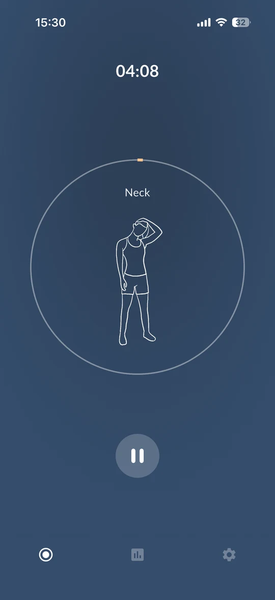
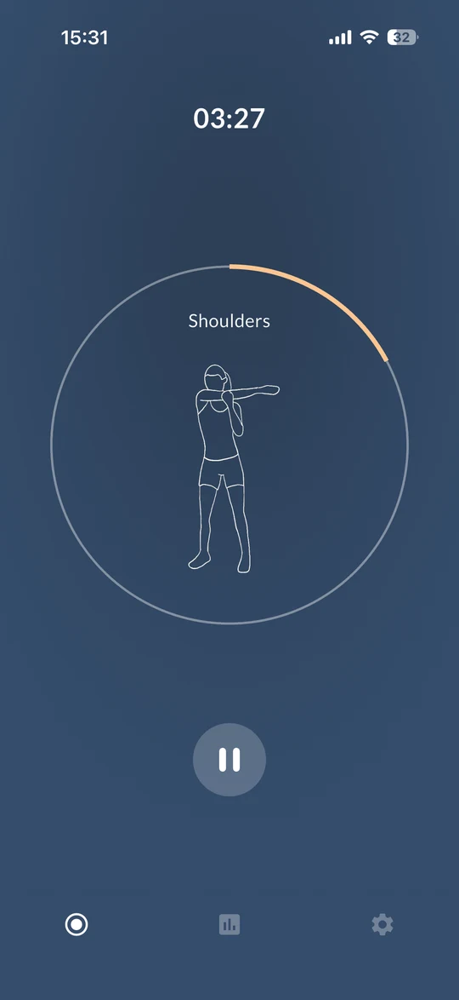
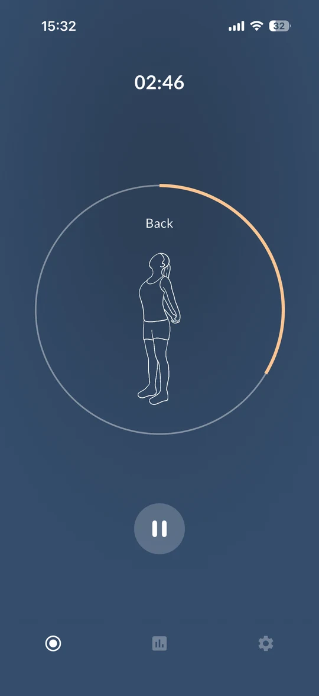
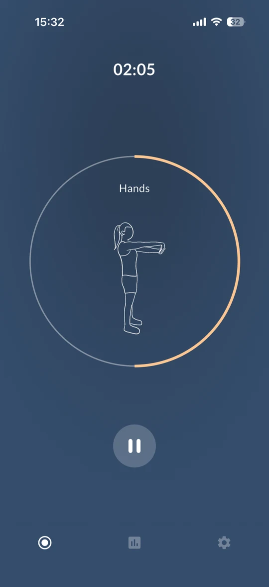
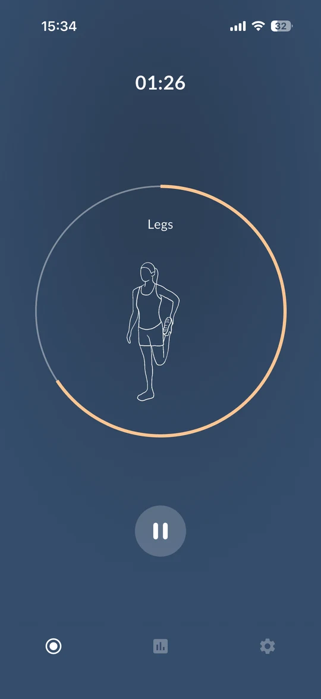
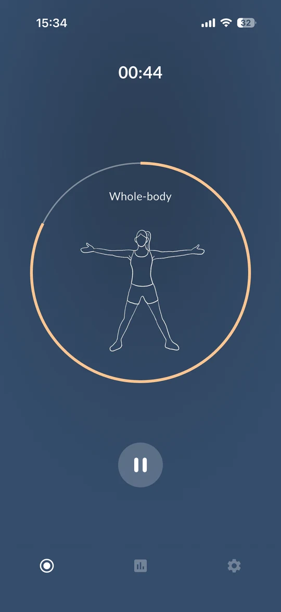
Everywhere
iPhone, Mac & Android.
Review
See where your time went.
By day, week and category.

Loved by users and creators
“The five minutes stretching exercises of this app make me feel much better after studying sessions.”
“I haven't seen such a simple and aesthetic app until now.”
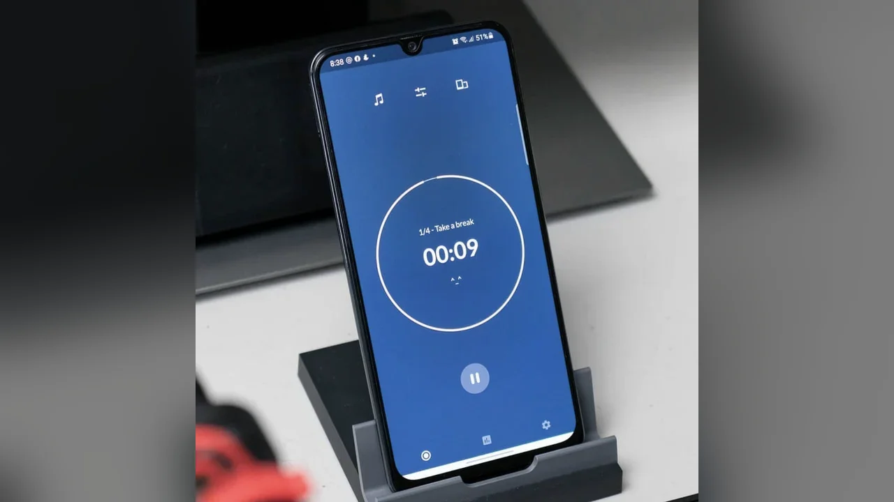
Instagram “Reintroducing the Pomodoro technique” @earlmalaki“Was looking for an alternative to the popular Forest timer app and found Foca!”
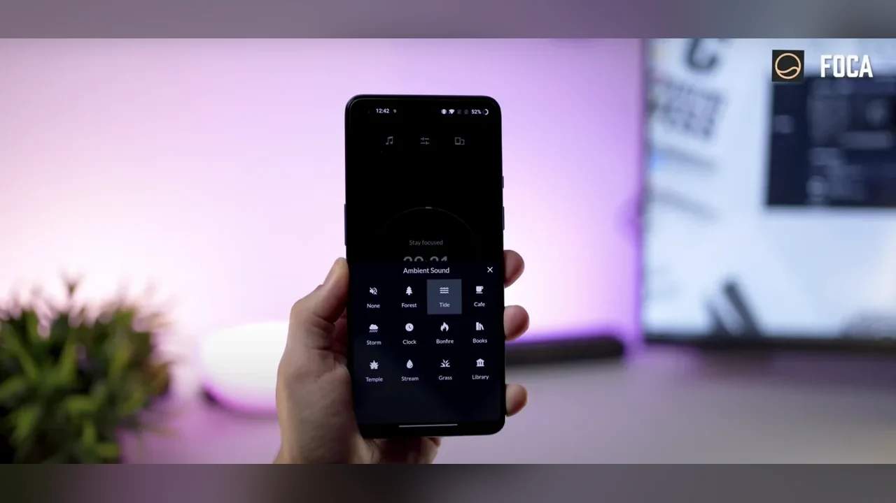
YouTube “Top 7 Must Have Android Apps” mobiscrub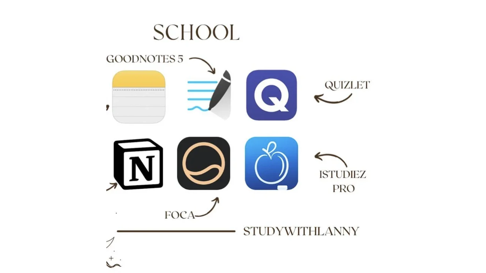
Instagram “My favorite apps for school” @studywithlannyAlso from Foca Studio
Remember a day.
Birthdays, anniversaries and countdowns as Moment cards on your Home and Lock Screen.
Meet Dayfold →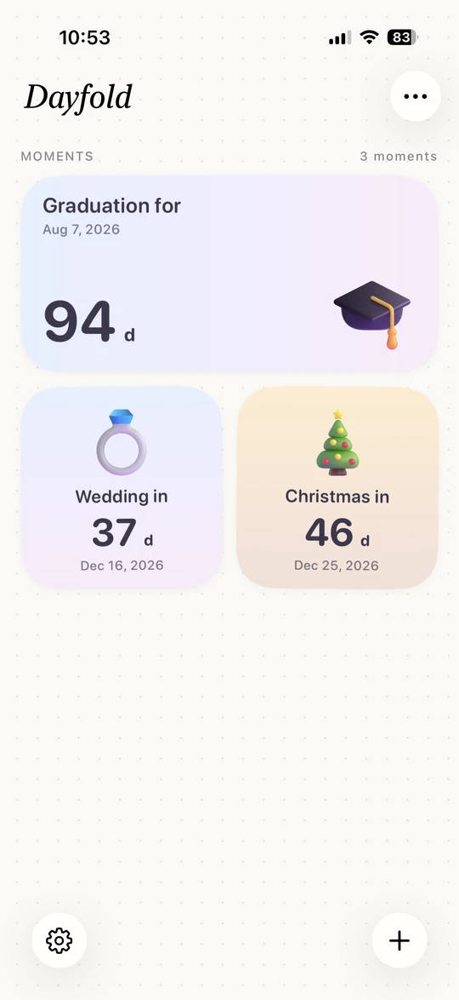
Repeat the round.
Tabata, boxing and circuits with audio cues and workout history.
Meet Core →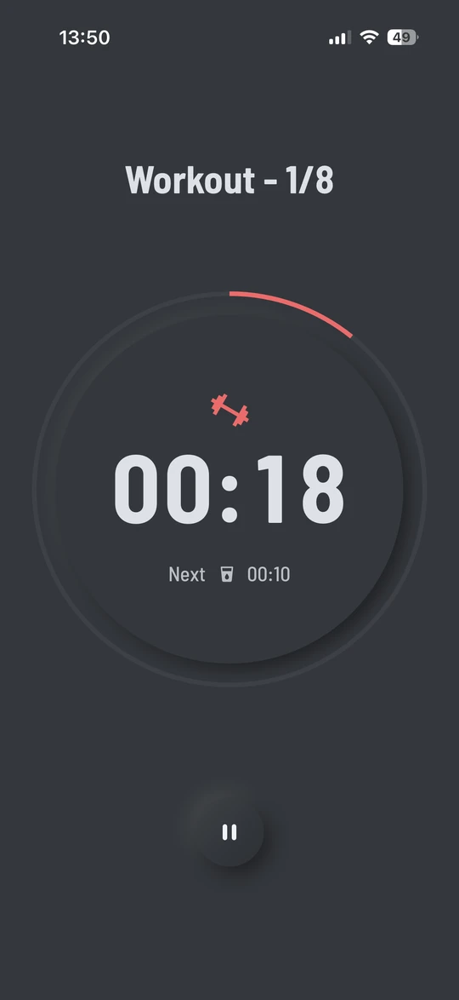
Team
Foca Studio is a small, independent team. Foca began in 2020, when we were working from home — distracted, and stiff from sitting all day. Dayfold and Core grew from the same idea: small tools, made carefully.
FAQ
What is Foca?
Foca is a Pomodoro focus timer for iPhone, Mac and Android, with ambient sounds, guided stretch breaks, Auto-Run and focus statistics.
How is Foca different from a basic Pomodoro timer?
Every break can become a short guided stretch, and focus sessions can play ambient sounds such as forest, tide or café.
Is Foca free?
Yes. Foca is free to download and has no ads. Foca Plus is an optional upgrade.
Which devices does Foca support?
iPhone and Mac on the App Store, and Android on Google Play.
What are Dayfold and Core?
Dayfold puts countdowns and anniversaries on your Home and Lock Screen. Core is an interval timer for HIIT, Tabata and boxing. Both are for iPhone.
Using Foca on Android? Notification and background steps are in the help center.